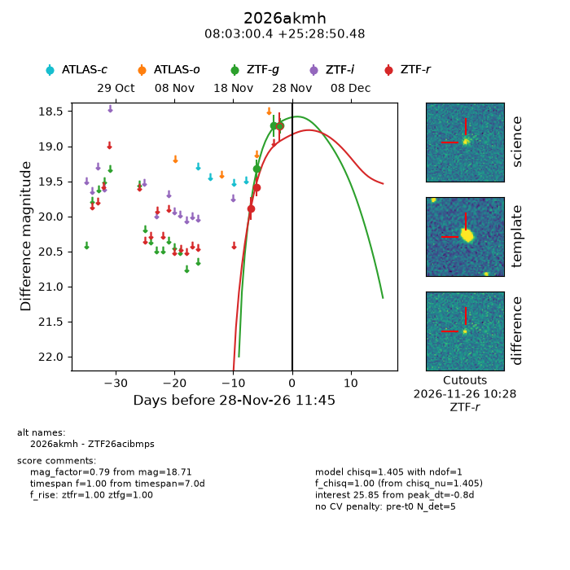
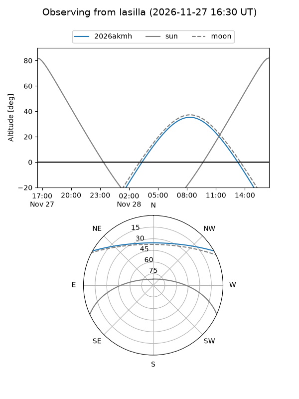
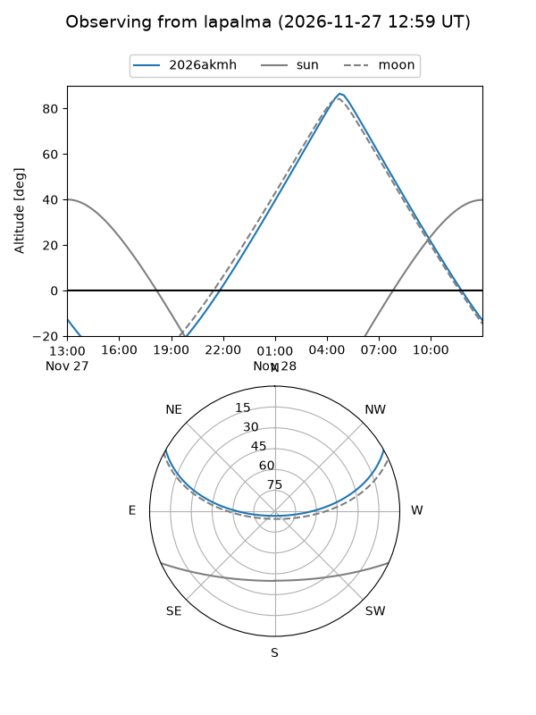
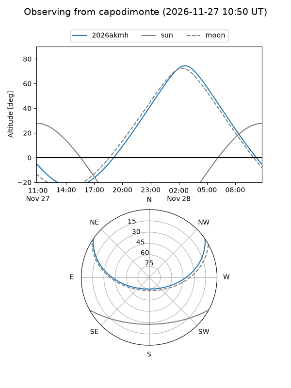
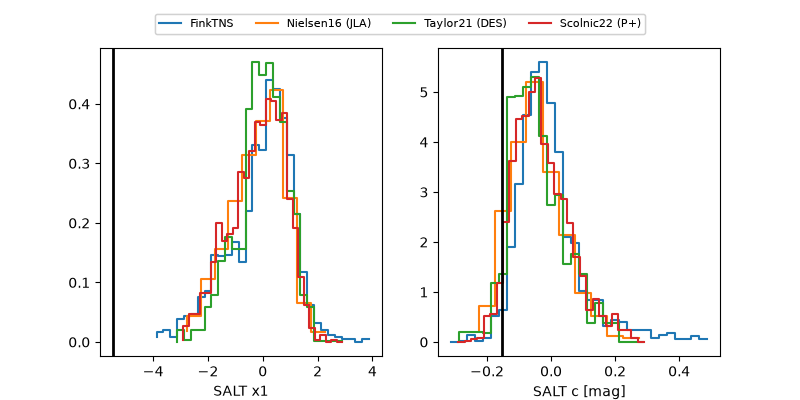

2026akmh
Target 2026akmh at 2026-11-28 11:46
Aliases and brokers:
FINK-ZTF: ztf.fink-portal.org/ZTF26acibmps
Lasair-ZTF: lasair-ztf.lsst.ac.uk/objects/ZTF26acibmps
ALeRCE-ZTF: alerce.online/object/ZTF26acibmps
YSE-PZ: ziggy.ucolick.org/yse/transient_detail/2026akmh
TNS name: wis-tns.org/object/2026akmh
Direct TNS query: direct search
alt names
ZTF26acibmps (ztf,fink_ztf)
2026akmh (tns,yse)
Coordinates:
equatorial (ra, dec) = 120.7517,+25.48069
equatorial (HMS+DMS) = 08:03:00.41,+25:28:50.48
galactic (l, b) = (196.3127,+26.29544)
Flags:
peak dt: -0.8
Photometry:
last ztfg=18.71, ztfr=19.58
3 ztfg, 2 ztfr detections
Lightcurve

Visibility



Additional plots
